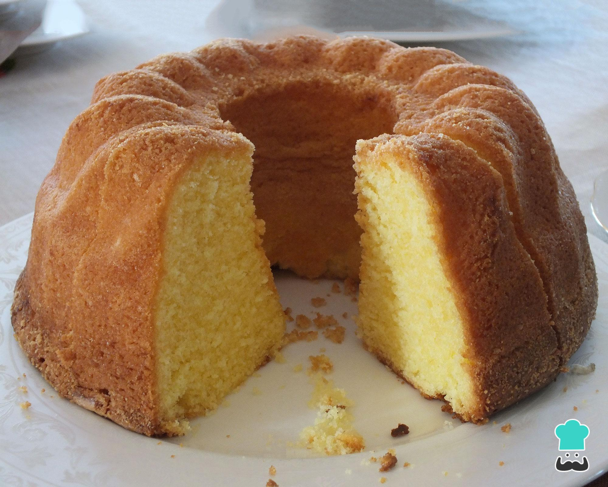

Bolo de chocolate
- 3 xicaras de farinha de trigo
- 4 ovos
- 200g de manetiga
- 1 xicaea de leite
- 1 colher de cha de fermento quimico
- 1 1/2 de açucar
- 150g de cacau em po
- Em um reciíente despeje o açucar a maneiga e os ovos
- Adicione o leite aos poucos
- Adicione a farinha
- Adicione o fermento
- Misture até obter uma massa homgenea
- Leve ao formo de 35 a 45min a 180º